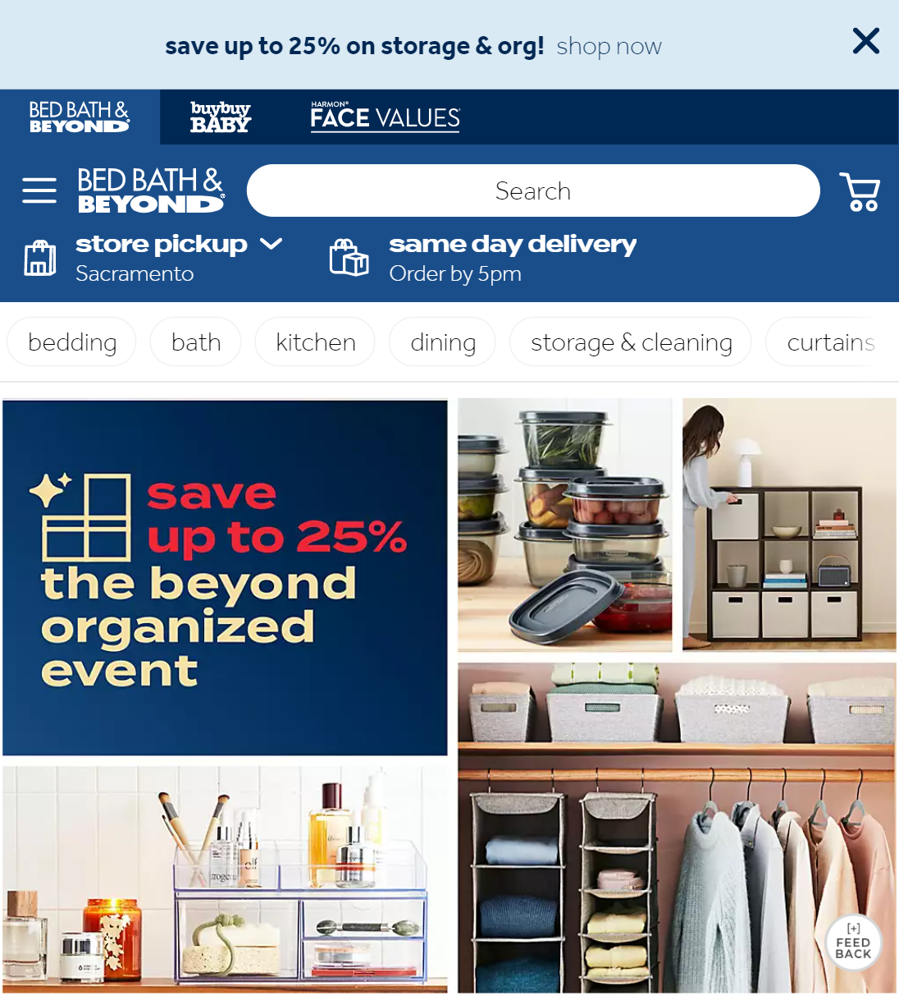
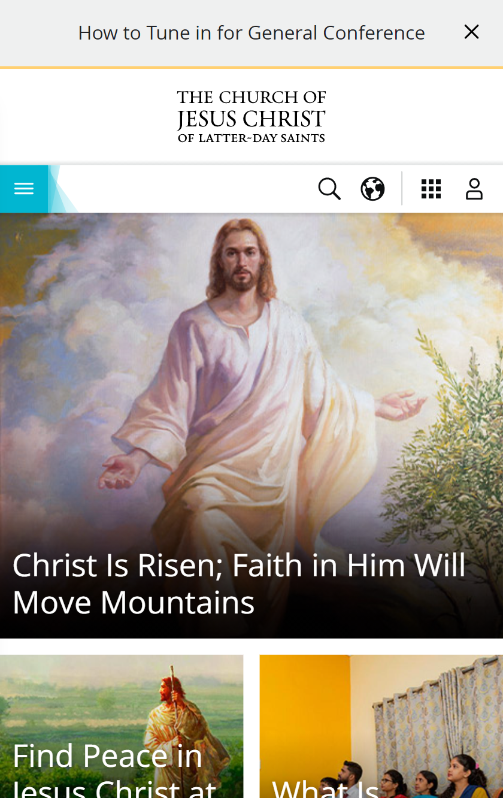

Hick's Law
Bed Bath & Beyond
Bed Bath and Beyond is a great example of utilizing the design principle of, Hick’s law. Which is a rule about the time it takes for a person to make a decision as a result of possible choices. As you see on their home page she shopping is broken down into categories which will help guide you to what you want and narrowing your choices to help you make your decision faster without wasting time.
Visual Hierachy
The Church of Jesus Christ of Latter-Day Saints
The Church of Jesus Christ of Latter-Day Saints website is a great representation of website is a great representation of the design principle, visual hierarchy. On their home page you first see a picture of Christ who is the keystone of our religion. Also, there is reference to General Conference which is the next big church wide event coming up. This is a great example of this design principle also because they are quick to update the website if there is anything more important or pressing you can be sure it will catch your view on their home page.
White Space and Clean Design
Google is one of the most known websites that utilizes white space. This use of white space helps simplify and creates a clean efficient use of space, that is easy and quick for the user to use. Because of the designed purpose of google it doesn’t need more than a simple image or logo, this allows them to utilize the space, causing the users to focus on the search bar.